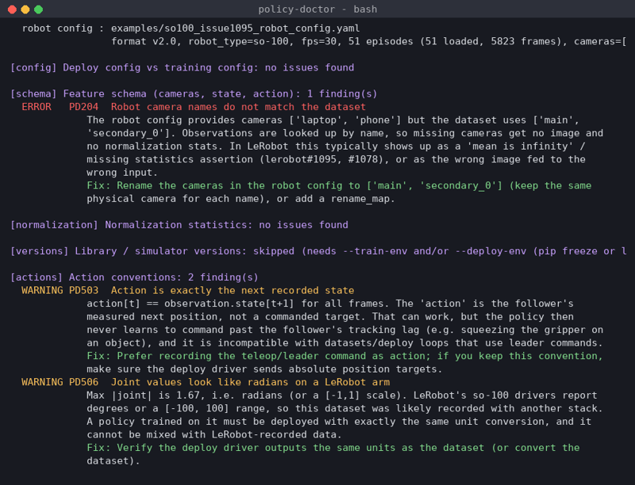

Founding AI Engineer (intern) @ Bulin AI · Physical AI & robot-learning tooling
I build tools that make learned robot policies easier to debug, and the LLM systems around them. MSc in Artificial Intelligence at ECE Paris (2024–2026). Based in Paris.
Your policy works in training but fails on the robot. Why? Policy Doctor is an open-source, CPU-only CLI (plus a small Gradio app). It compares a LeRobot dataset, a trained checkpoint and the robot/deploy config, and explains in plain English the mismatches that most often break ACT, Diffusion Policy, SmolVLA, pi0/pi0.5, GR00T and openpi deployments. Each finding comes with its evidence and a fix.

pip install . # from a clone of the repo policy-doctor check me/my_dataset --policy path/to/pretrained_model --robot-config deploy.yaml
Repo launching soon
Ask a PostgreSQL database questions in plain English. Schema retrieval from Qdrant, SQL from a local LLM, and an auto-chosen KPI card or chart.
Collects Reddit, RSS and Google Trends signals and turns them into 5 structured, LLM-generated fashion-trend hypotheses.
A minimal RAG API: local embeddings stored in pgvector, retrieved, and answered from context by a local LLM.
Section-by-section embedding match between a resume and a job description, with local LLM feedback.
Working on robot learning, LeRobot deployments or evaluation tooling? I'd like to hear what breaks when you deploy.